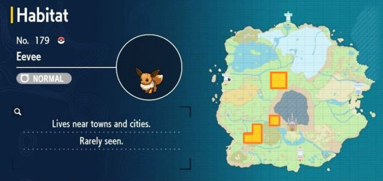

Es capaz de evolucionar de muchas maneras para adaptarse sin problemas a cualquier medio. En pokemon escarlata y purpura, Eevee se puede capturar tanto en el Área 2 (Sur de Paldea) como en el Área 3 (Oeste de Paldea), aunque no es de los Pokémon con mayor ratio de aparición. Esto quiere decir que aparece menos que otros Pokémon.
